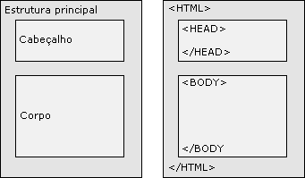
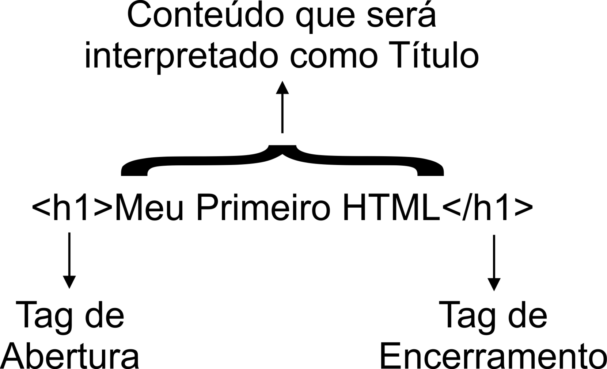
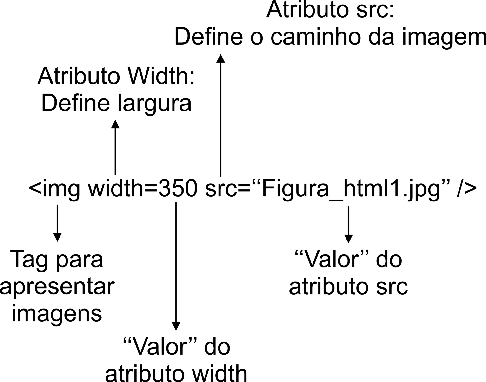
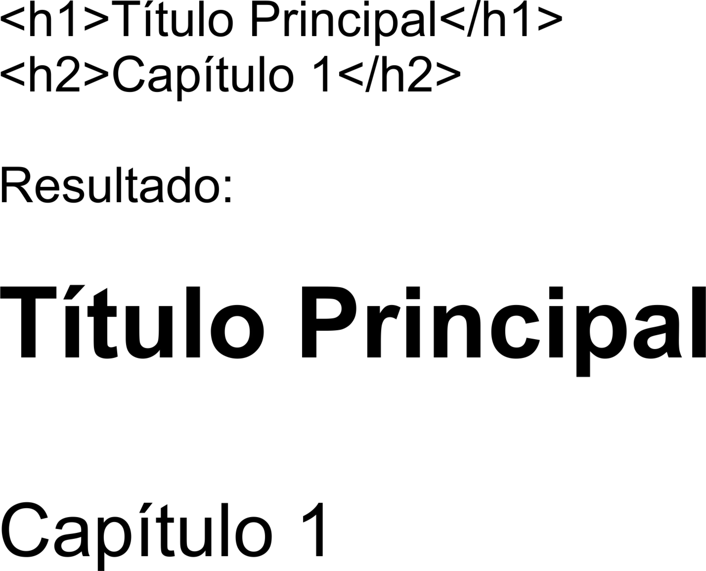
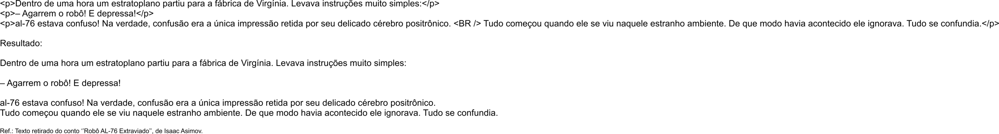
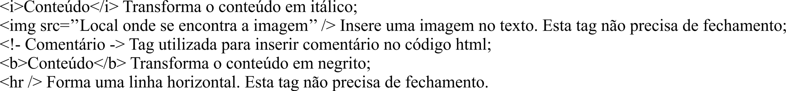
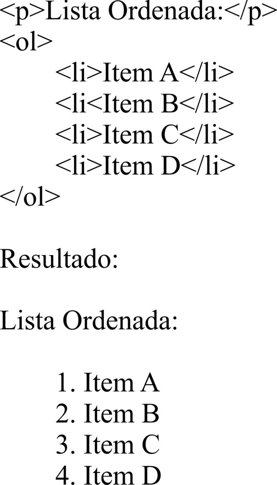
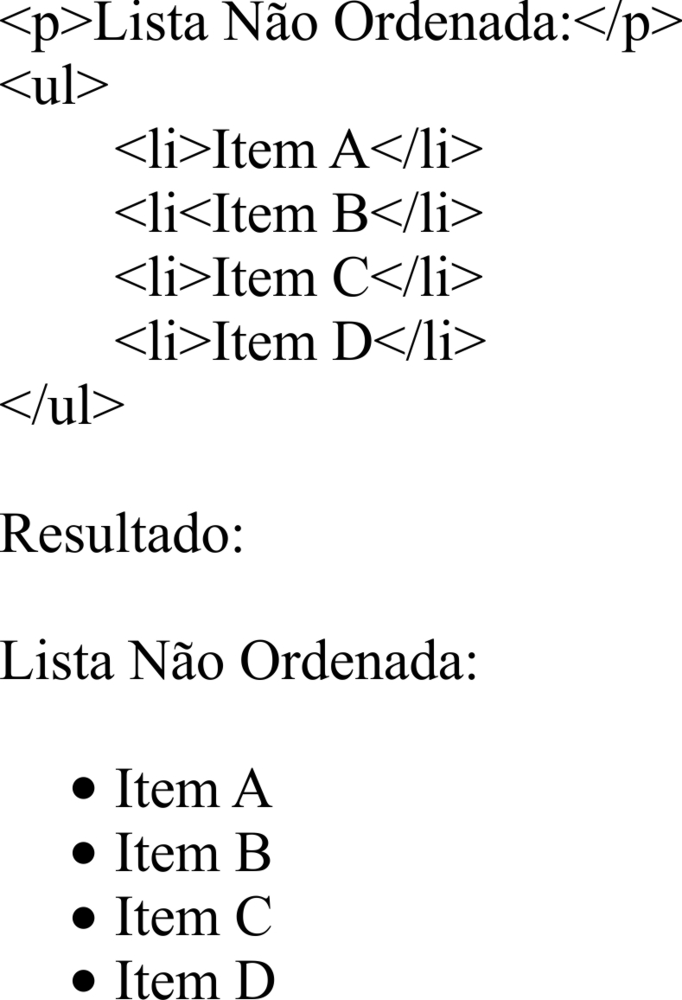
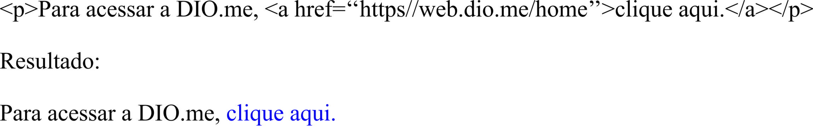
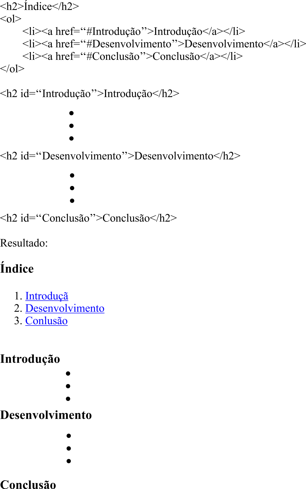

O Hyper Text Markup Language, que traduzindo para o português seria Linguagem de Marcação de Hiper Texto, utiliza se de códigos para formatar (Marcar) o conteúdo de páginas para adequá-las visualmente, tornando-as agradáveis e fáceis de utilizar pelo usuário.
As Tags são os elementos básicos do HTML e com elas podemos inserir textos, figuras, campos para formulários, links para outras páginas, alterar tamanhos, cores e etc.
Basicamente, um documento feito em html possui três partes: Estrutura Principal, Cabeçalho e Corpo.
A Estrutura Principal inicia-se com a tag < HTML > e é finalizada pela tag < /HTML >. Estas tags informam ao navegador onde começa e termina o código html
O Cabeçalho é iniciado pela tag < HEAD > e finalizado pela tag < /HEAD >, e tem como objetivo guardar informações acerca do documento, como título (utilizando o comando TITLE para aparecer no título da janela do navegador).
O Corpo do Documento têm seus limites impostos através das tags < BODY > e, no final, pela < /BODY >. Entre elas é colocado o conteúdo da página, como texto, imagens, links, etc.
VoltarQuando uma página em html é aberta em um navegador, este lê o código do arquivo e faz uma interpretação mostrando o resultado visualmente na tela do dispositivo.
O código do arquivo html possui alguns comandos para que o navegador faça mudanças visuais no texto deste arquivo. Esses comandos são chamados de Tags. No código, as tags são utilizadas sempre entre os sinais < >. Veja o exemplo:
Este tag (< h1 >) indica ao navegador que o que está entre ele (Meu Primeiro HTML) seja colocado na página como um título. Ainda observando o comando acima podemos verificar que ele vem em par, o primeiro é o tag de abertura e o último, com a barra, é o tag de encerramento.
Toda característica associada à tag é chamada de atributo. O atributo recebe um valor que o caracteriza e cada tag pode ter associado pares de atributo="valor" em sua tag de abertura. Veja o exemplo:
Para que os navegadores possam traduzir o código html e apresentar um resultado adequado para o usuário, algumas tags são importantes. Estas serão descritas neste texto.
Para inserir um título na página, utilizamos a tag < h1 >. Esta tag possui um espécie de hierarquia, que será exemplificada abaixo:
A tag h possui seis elementos, sendo o h1 maior e representa o título principal. Os outros, h2 em diante, seriam sub-títulos ou sub-seções de um capítulo.
Para o parágrafo deve ser utilizado a tag < p >. Veja o exemplo:
Neste exemplo foi utilizado uma tag < BR /> para forçar a quebra de linha dentro do parágrafo em "... positrônico.". Esta tag não precisa de fechamento.
Outras tags importantes para a utilização em textos são:
Para organizar informações no html, existem duas maneiras: a ordenada e a não ordenada. Para a lista ordenada, utilizamos a tag < ol >< ol /> no início e fim da lista e < li >< li /> na inclusão dos itens da lista. Veja o exemplo:
No caso da lista não ordenada, são colocados marcadores a frente de cada item. Veja o exemplo:
Os Links (ligações) possibilitam a navegação nas páginas da internet. Com ela, o navegador nos traz novas páginas, imagens, vídeos ou qualquer outro recurso linkado e disponível.
A ligação é feita através da tag âncora < a >< /a > com o atributo href="". Veja o exemplo:
A âncora também funciona linkando itens na mesma página. Veja o exemplo:
No exemplo acima, ancoramos os itens do índice ao capítulo correspondente, ou seja, quando clicar em Desenvolvimento, por exemplo, o navegador vai para o capítulo Desenvolvimento automáticamente.
Voltar